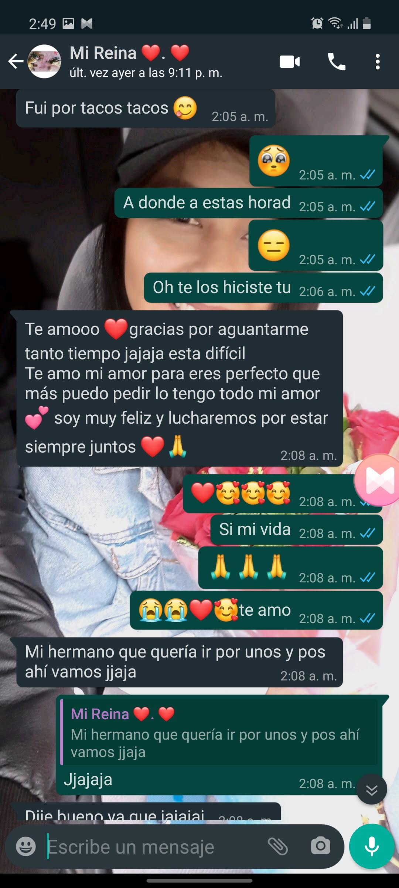

Ma belle espero me dejes enamorate una vez mas
Cache espero poder hacerte sonteir que quieras verme estoy mejorando poco a poco,
eres eso que simpre pedi la verdad se que
ya no me quieres y eso me hace sentir mal pero porfavor , te pido algo dame una oportunidad acaso no hacia
nada bien eres y siempre seras mi princesa,nunca te eh fallado y no pienso hacerlo
tu sabes que aunque me hicieras desatianar siempre tenia ,tengo y tendre una sonrisa para ti la verdad yo si
valoro mucho cualquier momento a tu lado
ya que para mi eres como lo nuevo que descubres ese sentimiento que un niño mira su regalo de navidad en la
madrugada del 25 ,eso que sienten los astronomos
al descubir una nueva galaxia ya que tus ojos eso son
la verdad me muero poco a poquito por verte ♥.♥
hay una frase de una cancion que te dejo aqui :
A la fría luz, yo vivo para amarte y adorarte
Es todo lo que soy
Es todo lo que tengo
y se que no lo leeras pero si lo haces y dices que si porfavor dare todo para que
digas de nuevo ese mazeton ta feo y todo pero tiene lo suyo jiji no solo eso si no que
ojala te sientas orgulloza que por un segundo atu lado yo doy el mundo te lo juro que cambiare lo
que no te gusta de mi ♥️
cuando me queria escuchar un ti amo te quiero tuyo veia este video ♥

ese dia la verdad llore por lo que dijiste y sabia que sin importar que te apoyaria
y te quiero
cache ami ladito

quiero que tengas ganas de verme dime que hacer hare lo que sea solo dame una oportunidad te amo de verdad dime si volveria yo atu corazon :c porfa cache solo te pido una oportunidad

un dia que dijiste eso dije que no me alejaria sin importar que y no lo hare ami me importas demaciado y no quiero perderte ♥️